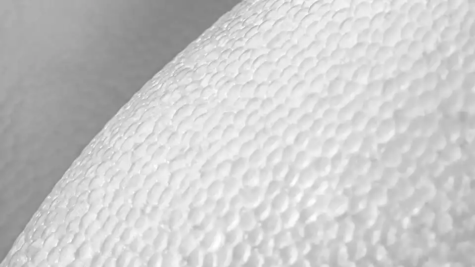

WHAT ARE THE FEATURES OF BOOST?
Boost has always been known for its energy return, but there are actually five Boost benefits that elevate the running experience. Let's start with comfort: the cushioning properties of Boost make it feel like you’re running on tiny, precision-engineered clouds. Boost is also designed to cope with a wide range of temperatures, making it the kind of running shoe that can pound through wind, snow, sun, rain—whatever—with no issues.
The third and fourth benefits of Boost are durability and flexibility. Boost is a technology that can hold up for mile after mile without any loss of performance. At the same time, Boost is flexible enough to provide a silky smooth ride—no matter what pace you’re setting.
But we can't talk about Boost without talking about energy return—the fifth and most famous benefit of Boost. The power to absorb and return more of an athlete’s kinetic output is what changed the performance shoe industry forever. There have been many imitators, but Boost remains the icon of energy return.
HOW IS BOOST MADE?
To create Boost, thermoplastic polyurethane particles are expanded to form closed cells around tiny pockets of air. The resulting product is known as expanded thermoplastic polyurethane — or eTPU, for short.
 Read more about the boost 🡒